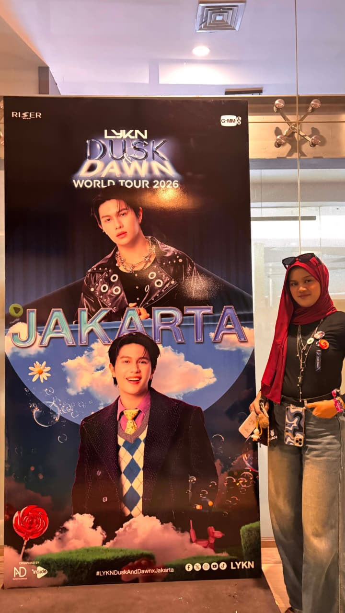
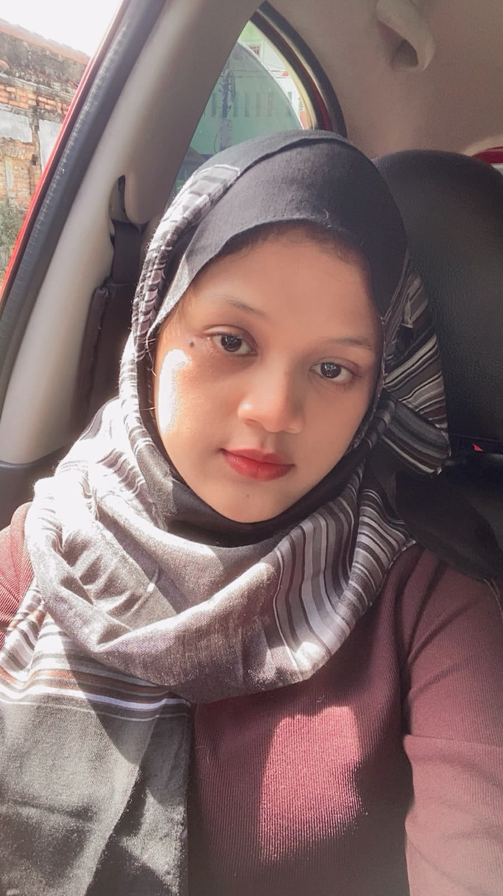
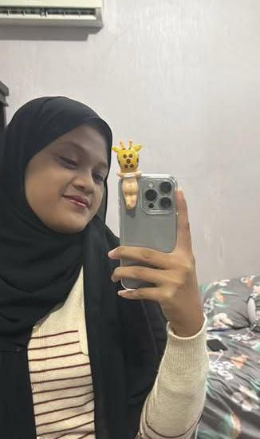

Semoga di usia yang baru ini kamu selalu diberikan kesehatan, kebahagiaan, dan semua impianmu bisa segera terwujud. Maap yaa editannya jelek soalnya baru belajar hehe dan ini ica edit sendiri khusus buat achel tersayang dari lodik tercintaa🥳
Selamat ulang tahun untuk salah satu orang paling berharga dalam hidupnya ica! Di hari yang luar biasa ini, ica tidak punya kado mewah, tapi ica punya jutaan doa baik yang tulus untuk acel tersayang. Semoga di usia acel yang ke 21 ini, Allah selalu melimpahkan kesehatan yang luar biasa, kebahagiaan yang tidak pernah putus, kedamaian hati, dan kelancaran dalam setiap urusan serta impian yang sedang acel kejar saat ini.
ica cuma mau bilang terima kasih banyak untuk semuanya. Terima kasih sudah menjadi sahabat yang luar biasa dari gontor sampai sekarang, menjadi pendengar yang sangat sabar saat ica banyak mengeluh dan yapping hehe, dan selalu menjadi orang yang bisa ica andalkan di kala dunia ica sedang tidak baik-baik saja. bisa dapat teman seperti acel itu tidak mudah sangat susah (soalnya suka cool2 gitu haha), dan ica merasa sangat beruntung bisa berteman sejauh ini dengan acel tersayang🥹🫂
Ingat ya, apa pun rintangan yang akan acel hadapi di depan nanti, jangan pernah merasa sendirian. acel punya ica yang akan selalu siap sedia membantu dan mendukung acel dari belakang. Jangan pernah lelah untuk menjadi orang baik, teruslah bersinar dengan cara acel sendiri, dan nikmati setiap proses perjalanan hidupmu.
Sekali lagi, selamat ulang tahun, ya! Semoga semua air mata kesedihanmu di tahun lalu digantikan dengan tawa bahagia yang paling keras di tahun ini. Pokoknya, yang terbaik untukmu! Jangan lupa traktirannya pas di bekasii yaaa ditunggu, hahaha. dengerin musiknya sampai habis!
ini lagunya ica cari di youtube dan ica gatau ini lagunya acel suka atau tidak soalnya lagunya LYKN banyak hiksss pokoknya lagu ini ica dapat soalnya ica taunya acel suka william hehe pokoknya acel harus dengerin ampe selesai yaa!!
UNTUK TERAKHIR INI ICA BIKIN SENDIRI DENGAN USAHA ICA TIDAK ADA BANTUAN SIAPAPUN!!!! KALO GA PERCAYA TANYA SAMA UMI ICA GA MINTA TOLONG JAKI ATAU AL ATAU INFOR LAIN. ITUPUN ICA SEMPAT MINTA LINK KODE AKHIR KE JAKI TAPI ICA GA JADI PAKE SOALNYA ICA HARUS BISA USAHA DENGAN DIRI ICA SENDIRI BUAT BIKIN INI SOALNYA KHUSUS BUAT ACEL. JADI INI KHUSUS ICA BUAT UNTUK ACHEL OKEII DAN JANGAN BOSAN2 YAA TEMENAN SAMA ICAAA YANG LUCUUU DAN IMUTT INII🤗
mungkin ini aja yang bisa ica kasi buat acel maap yaa kalo ga sejago orang2 tapi ica percaya diri kok soalnya ini buatan ica sendiri hehe🥰
ICA SAYANG ACHEL💗
LOVE YOUU SO MUCHH BESTIKUUUU TERSAYANGG💗
Dari: ICHA LUCU DAN IMUT